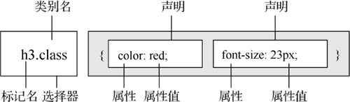
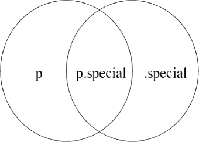

首页 > 编程笔记
CSS交集选择器的用法
CSS3 在 CSS2 的基础上引入了更为丰富的选择器，同时，浏览器厂商经过多年的发展，已经对 CSS3 的选择器有了很好的支持。在实际开发中，程序开发人员也可以有更多的选择器可以使用。
本节给大家介绍交集选择器。
这种方式构成的选择器，将选中同时满足前后两个选择器定义的元素，例如在图 1 中，前者（h3）指定了元素的类型，后者（class）指定了元素的类别或者 id，因此其被称为“交集选择器”。
例如，声明了 p、.special、p.special 这 3 种选择器，它们的选择范围如下图所示。
本节给大家介绍交集选择器。
交集选择器
交集选择器由两个基本选择器直接连接构成，其结果是选中二者各自元素范围的交集。其中第 1 个必须是标记选择器，第 2 个必须是类别选择器或者 ID 选择器。这两个选择器之间不能有空格，必须连续书写，形式如下图所示。

图 1 由标记选择器和类别选择器构成的交集选择器
图 1 由标记选择器和类别选择器构成的交集选择器
这种方式构成的选择器，将选中同时满足前后两个选择器定义的元素，例如在图 1 中，前者（h3）指定了元素的类型，后者（class）指定了元素的类别或者 id，因此其被称为“交集选择器”。
例如，声明了 p、.special、p.special 这 3 种选择器，它们的选择范围如下图所示。
实例
<!DOCTYPE html>
<html>
<head>
<title>选择器.class</title>
<style type="text/css">
p{ /* 标记选择器 */
color:blue;
}
p.special{ /* 标记.类别选择器 */
color:red; /* 红色 */
}
.special{ /* 类别选择器 */
color:green;
}
</style>
</head>
<body>
<p>普通段落文本（蓝色）</p>
<h3>普通标题文本（黑色）</h3>
<p class="special">指定了.special类别的段落文本（红色）</p>
<h3 class="special">指定了.special类别的标题文本（绿色）</h3>
</body>
</html>
上面的代码定义了 <p> 标记的样式，也定义了 .special 类别的样式，此外还单独定义了 p.special 用于特殊的控制。在这个 p.special 中定义的风格样式仅适用于 <p class="special"> 标记，而不会影响使用了 .special 的其他标记，效果如下图所示。

图 2 交集（标记类别）选择器效果
图 2 交集（标记类别）选择器效果
关注公众号「站长严长生」，在手机上阅读所有教程，随时随地都能学习。内含一款搜索神器，免费下载全网书籍和视频。

微信扫码关注公众号